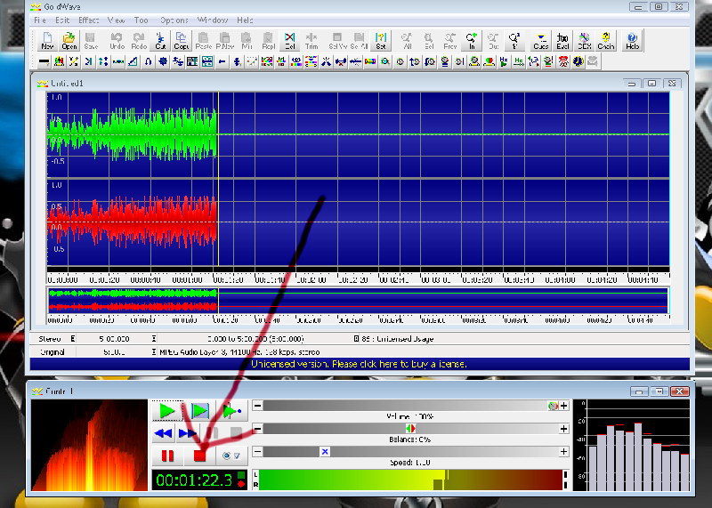

Bienvenidos a la wiki del programador en este sitio web en contraras desde codigo de programacion hasta recomendaciones de como empezar en este gran mundo
Que es un programador
Un programador es aquel que es capaz de comunicarse con una maquina mediante codigo o comandos , no solo eso si no que tambien es capaz de resolver problemas informaticos,crear app , paginas web entre mucho mas
Unas de las cosas mas comunes que nos hacen identificar como progrmadores es que un progrmador maneja la logica
Tipos de progrmadores
- Programdor de mobil
- Progrmador web
- Progrmador desktop(pc)
- Progrmador programmer (Juegos)
- progrmador ejecutivo
- Progrmador de sonido
Progrmador mobil
Es el progrmador experto en crear app para tables,celulares y dispositivos mobiles
Programador web
Es el encargado de crear paginas webs, juegos web y aplicaciones web

Programador desktop
Es el progrmador encargado de crear aplicaciones para pc
Programador programmer
Es el progrmador que crea y desarrolla video juegos ya sean para pc o celular
Progrmador ejecutivo
Es el que cordina el proceso de aplicacion de codigo en un proyecto, independientemente del lenguajes o metodologia de trabajo mayor mente conocidos como jefes de proyecto, su labor es comparable a la de un ejecutivo normal
Progrmador de sonido
Como su nombre lo dice es un progrmador de sonido es el que maneja el sonido
